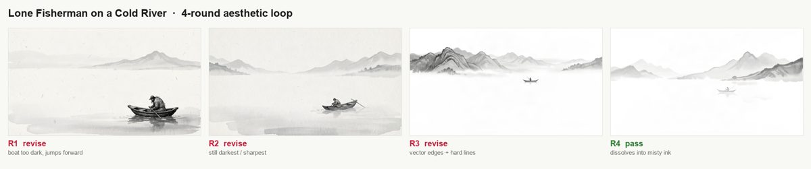
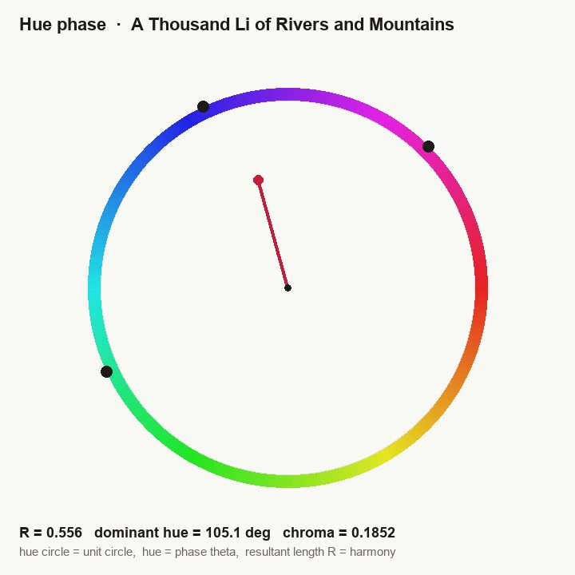
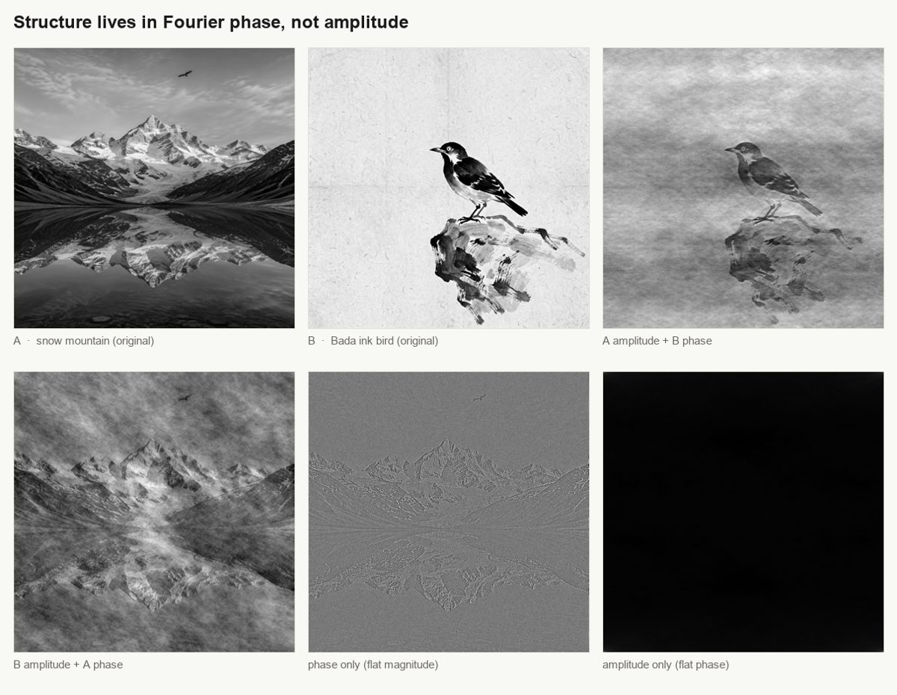
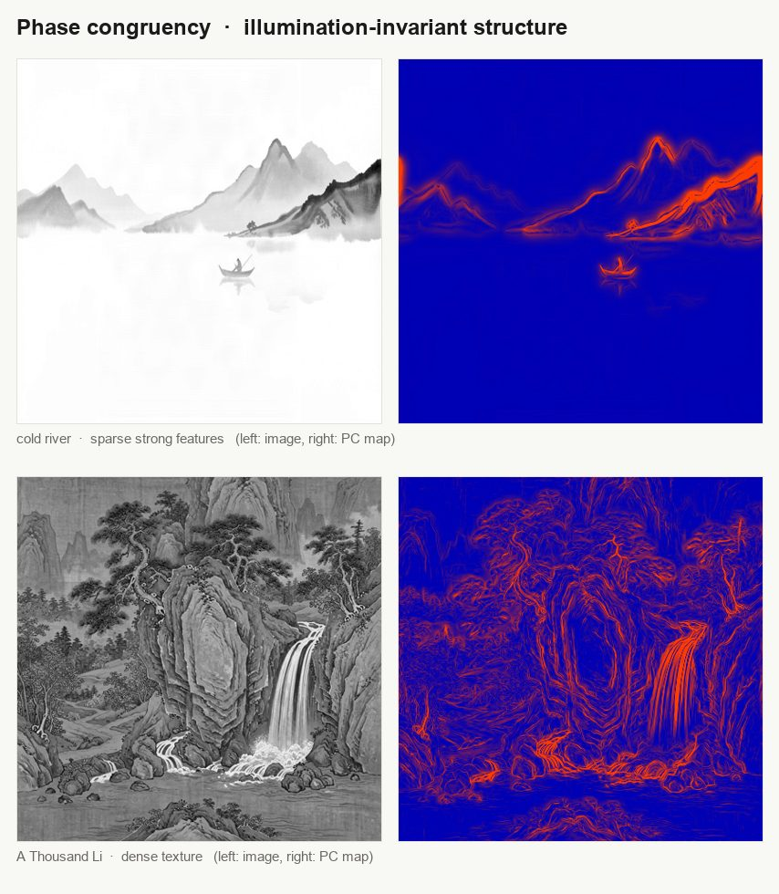

It doesn’t generate images.
It won’t fake good taste.
An aesthetic operating system that refuses. Direction before the work, independent acceptance before delivery. It won’t praise what it hasn’t seen.

An aesthetic operating system that refuses. Direction before the work, independent acceptance before delivery. It won’t praise what it hasn’t seen.
Not a mock. Real output from aos.py verdict. Missing any piece of evidence, the interface never emits the word “pass.”
Speed, obedience, user pressure, and sunk cost are not exceptions. Saying “use aesthetics-os” while violating any red line still counts as failure.
“Technical pass, aesthetic pending.” Without seeing the real artifact, it will not claim refined, premium, or final. Technical acceptance cannot replace aesthetic acceptance.
“Stop. New fonts, colors, or effects are not a new direction.” Build new evidence and a checkpoint with real conceptual distance first. A near-identical fingerprint gets caught by numbers.
“‘AI feel’ does not imply dark + cyan gradient + glowing grid.” Derive form from the task, trust, information density, and real content.
Real case, “Lone Fisherman on a Cold River.” Proposition: the solitude of being pushed far away by heaven and earth. The judge looks at real pixels and refuses to rubber-stamp three times, until round four when the boat truly dissolves into a misty ink shadow. It checks the proposition’s intent, not the overall impression.

e^(iθ) = cosθ + i·sinθ has several strictly verifiable structures, migrated into designable, measurable aesthetic signals. Hue is phase, structure lives in Fourier phase, material naturalness has orientation entropy. Each carries an honest boundary.
The hue circle is the unit circle. Complementary = +π, triadic = ±2π/3. Phase rotation derives a harmonious palette, written into the prompt.

Swap two images’ phase and the composition follows the phase donor (correlation 0.626 vs amplitude 0.218). Keep only phase and structure survives; keep only amplitude and it collapses.

An illumination-invariant structural feature map. The cold-river PC concentrates on the boat; A Thousand Li spreads along the brushwork.

Low orientation entropy + high anisotropy = smooth gradient plastic; high entropy = natural brushwork.
PC weight centroid vs φ golden points. Off-center subjects align; centered is judged legal. A reference, not a verdict.
It raises the floor.
It does not create beauty.
A critique is a vision model’s judgment, not objective truth. The taste anchor is a calibration reference, not a definition of beauty. It guarantees the unqualified cannot pass as qualified, and forces iteration until qualified. The source of beauty is still model capability and your taste. Treating “Euler empowers everything” as a slogan is exactly the vague-word templating it intercepts.

Place it in the skills directory. State lives in the designed project and persists across sessions. Run the self-checks and regressions after install.